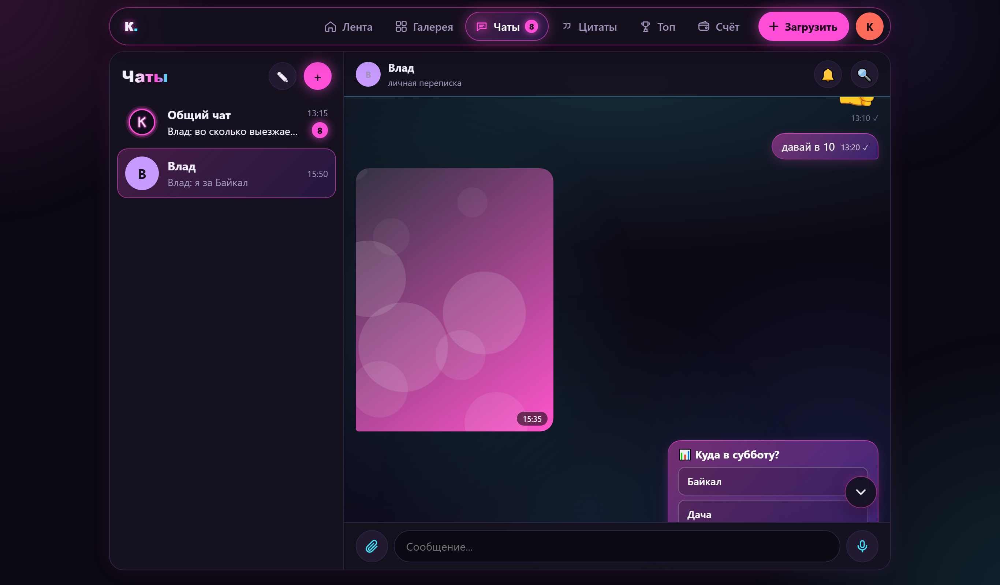
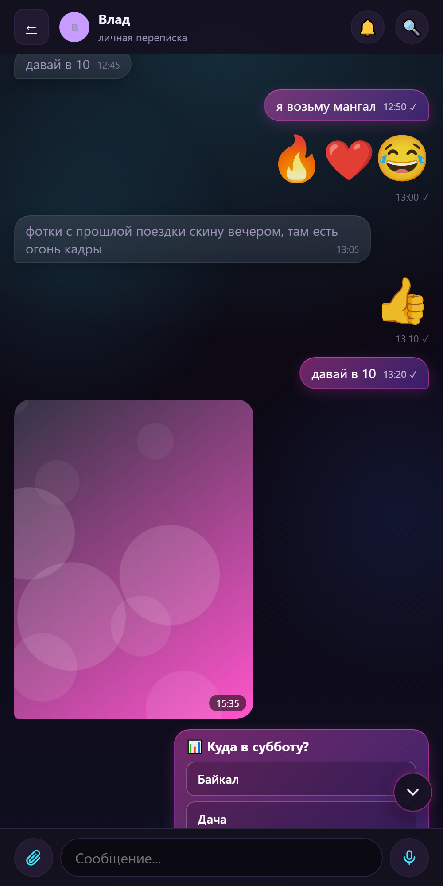
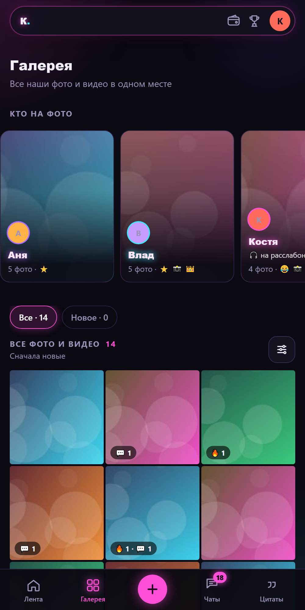
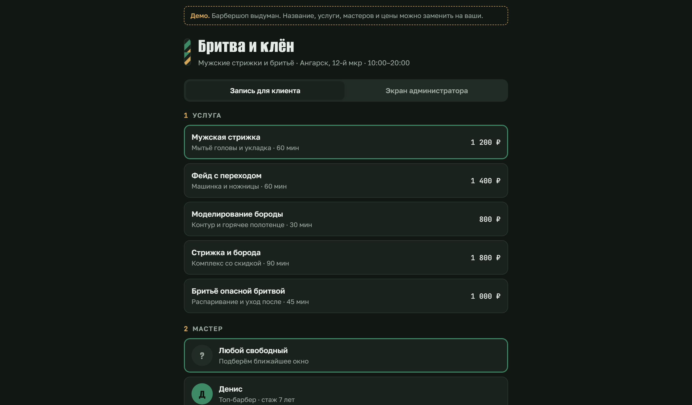
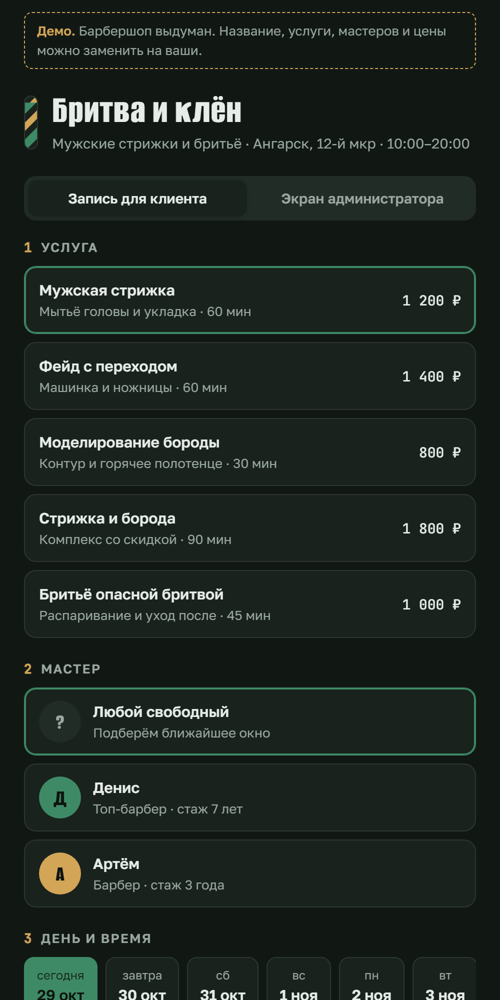
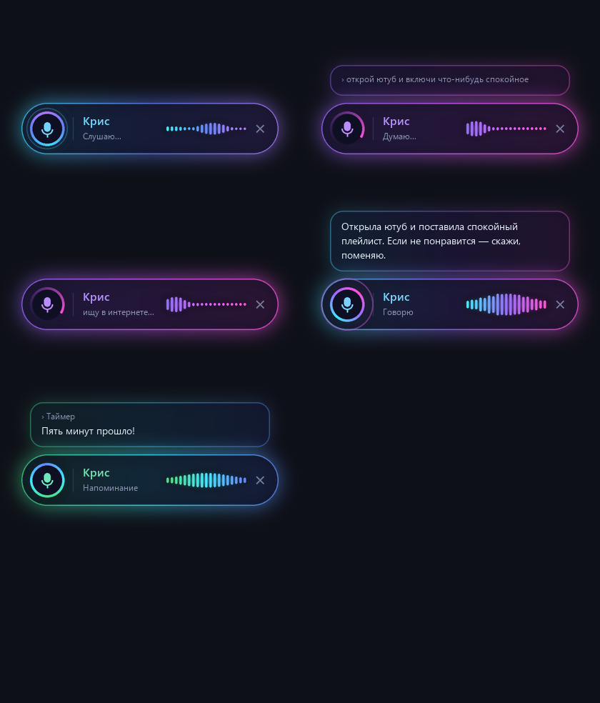

Константин Губарев
Делаю сайты и веб-приложения с Claude Code: от задачи до проверки на телефоне и публикации.
Закрытая соцсеть для компании друзей
живые пользователи · 130+ версийЛента и галерея фото и видео, отметки людей, реакции и комментарии. Мессенджер с голосовыми, опросами, ответами и закреплёнными сообщениями, push-уведомления на iPhone, установка на телефон как приложение, живые обновления.
HTML/CSS/JS без сборки · Supabase (Postgres, правила доступа, Edge Functions, Realtime) · Yandex Object Storage · GitHub Pages



Онлайн-запись для барбершопа
демоКлиент выбирает услугу, мастера и свободное время, администратор видит расписание и записи. Адаптив под телефон.


«Крис», голосовой помощник для Windows
PythonРаспознавание речи Whisper на видеокарте, синтез голоса Silero, Claude для ответов. Открывает программы и сайты, ставит таймеры и напоминания, ищет в интернете, работает через Telegram-бота. Свой экранный индикатор с анимацией состояний.

На скриншотах соцсети демо-данные: люди, сообщения и фото выдуманы.